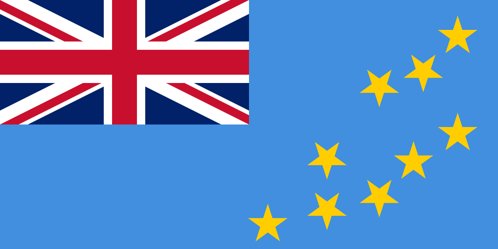
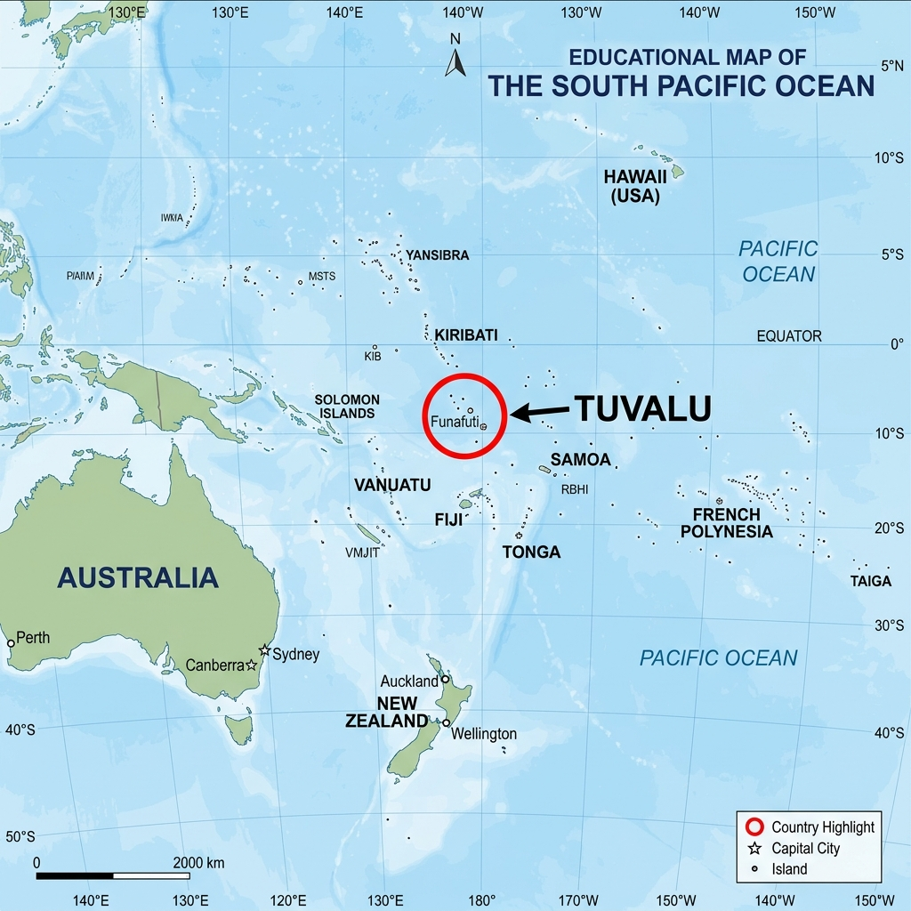
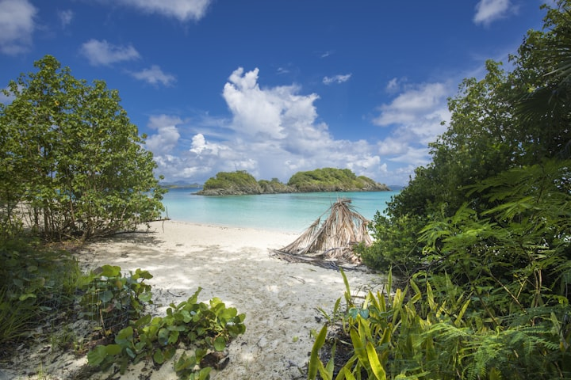

Country Profile Project • Model
Tuvalu & Sea Level Rise
A country built two metres above the ocean decides what to do when the ocean starts winning.
Outcome (verbatim from the curriculum)
Evaluate the consequences of action and inaction as twenty-first century global citizens.


The Funafuti lagoon at high tide. Photo: Wikimedia Commons (CC).
SOURCES ON THIS SLIDE: CIA World Factbook. (2024). Tuvalu. https://www.cia.gov/the-world-factbook/countries/tuvalu/ • photo credit in caption
Why a 4The title names the country AND the issue, the opening line sets up a conflict (not a geography report), the outcome is on the title slide, and the lagoon photo does emotional work the text does not have to do.

Educational map of the South Pacific with Tuvalu circled (Wikimedia Commons, CC).
Slide 2 • Country Background
Nine islands, one kilometre of "up"
9
atolls + reef islands
26 km²
total land
~11,000
people
2 m
average height above sea
- Polynesian nation in the South Pacific, halfway between Hawaii and Australia. Languages: Tuvaluan and English.
- Parliamentary democracy in free association with tradition: island elders (the Falekaupule still guide local decisions).
- Money comes from fishing licences, seafarer wages sent home, foreign aid, and one strange fact: Tuvalu rents out its internet suffix .tv to streaming companies.
SOURCES ON THIS SLIDE: CIA World Factbook. (2024). Tuvalu. • SPREP. (2021). Tuvalu country profile. https://www.sprep.org/members/tuvalu
Why a 4Four numbers do the work of a paragraph. Culture, government and economy each get one line, and the .tv fact is real research (it is on Slide 2 of any full-marks deck: 3-4 sentences, no more).
Slide 3 • The Global Issue
Sea level rise: a global cause, a local ending
- Warm water expands and melting ice sheets add water: the global ocean is rising about 3.4 mm per year.
- The Western Pacific rises almost twice as fast as the world average, because of wind and current patterns.
- Tuvalu's sea has climbed roughly 15 cm in 30 years.
- By 2050, half of Funafuti, the main atoll where most people live, is projected to flood at high tide every single day.
- Salt water is already poisoning the underground freshwater and killing pulaka, the traditional crop.

A Tuvalu shoreline. Photo: Wikimedia Commons (CC).
SOURCES ON THIS SLIDE: NASA Sea Level Change Portal. (2023). https://sealevel.nasa.gov/ • IPCC. (2021). Special report on the ocean and cryosphere. https://www.ipcc.ch/srocc/
Why a 4The issue is defined globally (3.4 mm), then scaled to the country (15 cm / 30 years) with a dated projection (2050). Real numbers, named sources, no vague "climate change is bad".
Slide 4 • Action / Inaction
What Tuvalu has actually done
Build
- Coastal Adaptation Project (2017-2024): $38.9M from the Green Climate Fund. Reclaimed 7.3 hectares of land and raised it 3.5 m above the current sea. Rock walls on the outer islands.
- Water security: rainwater tanks and small desalination units against the poisoned groundwater.
Diplomacy
- UN + AOSIS: led the island-states fight for the 1.5°C target. "Two degrees is a death sentence for Tuvalu."
- Digital Nation (COP27, 2022): a digital twin of the country, built to preserve statehood and culture if the land is lost.
- Falepili Union (Nov 2023): a first-of-its-kind treaty with Australia: 280 Tuvaluans a year can move, in exchange for Australia's say in Tuvalu's security.
SOURCES ON THIS SLIDE: UNDP. (2023). Tuvalu Coastal Adaptation Project. https://www.tcap.tv/ • DFAT. (2023). Australia-Tuvalu Falepili Union treaty. https://www.dfat.gov.au/
Why a 4Every bullet is a DONE thing with a date, a number, or a name. Nothing here is a promise. Slide 4 is the heart of the project: if yours is thinner than your background slide, the project is inside-out.
Slide 5 • Consequences
What came of it: the consequence map
Intended • and it worked
- Reclaimed land and rock walls protected houses and government buildings through recent storm seasons.
- The diplomacy campaign got results: more countries now accept that Tuvalu's statehood and ocean zone survive even if the land does not.
Unintended • nobody planned this
- Hard walls redirect wave energy: the protected beach wins, the unprotected beach next door erodes faster.
- Lost gardens mean imported rice and canned meat: Tuvalu now carries some of the world's highest diabetes rates.
- The Falepili Union splits families: working-age Tuvaluans leave for Australia, elders stay, the island's social fabric thins.
Long term: walls cannot beat the ocean forever, migration cannot keep a culture whole by itself, and "who carries it" has one answer in every row: the Tuvaluans.
SOURCES ON THIS SLIDE:SPREP. (2022). Coastal vulnerability assessment, Funafuti. https://www.sprep.org/ • ReliefWeb. (2023). Climate mobility in the Pacific: Kiribati and Tuvalu. https://reliefweb.int/
Why a 4Intended vs unintended, short vs long term, and a named victim in every line. This is the curriculum outcome on one slide: consequences of action AND inaction, evaluated.
Slide 6 • Canada Comparison + Reflection
Same ocean, different shoes: Canada's turn
- Canada also acts: the National Adaptation Strategy (2022) put $1.6B into flood maps, wildfire defence, and coastline protection, including here in Atlantic Canada.
- Canada also pays abroad: billions in international climate finance, some of it through the very Green Climate Fund that built Tuvalu's seawall.
- The honest difference: Canada is a rich continent-sized country that can move people inland. Tuvalu cannot retreat. Same issue, wildly different options, which is exactly why Tuvalu pushes for global targets instead of local walls.
Why should Canadians care?
- Nova Scotia is a coastal province watching the same water: ask the wharves of Cape Sable Island or the PEI shorelines.
- The 1.5°C target Tuvalu fights for is the same target that decides how much our coast spends on seawalls by 2070.
- Tuvalu's case is rewriting the rules on what a country is when its land disappears, and those rules are ones Canada depends on too.
SOURCES ON THIS SLIDE:Environment and Climate Change Canada. (2022). National Adaptation Strategy. https://www.canada.ca/ • Global Affairs Canada. (2023). Climate finance commitments. https://www.international.gc.ca/
Why a 4The comparison is specific (same issue, both act, real difference named and explained) and the reflection lands locally: Nova Scotia wharves, 2070, the rules of statehood. "Why care" answered in the student's own frame, not a slogan.
Slide 7 • Sources (APA)
Every source used in this deck
- Australian Government DFAT. (2023). Australia-Tuvalu Falepili Union treaty. https://www.dfat.gov.au/geo/pacific/australia-tuvalu-falepili-union
- Central Intelligence Agency. (2024). Tuvalu. In The World Factbook. https://www.cia.gov/the-world-factbook/countries/tuvalu/
- Environment and Climate Change Canada. (2022). Canada's National Adaptation Strategy. https://www.canada.ca/en/environment-climate-change.html
- IPCC. (2021). Special report on the ocean and cryosphere in a changing climate. https://www.ipcc.ch/srocc/
- NASA Sea Level Change Portal. (2023). Sea level projection tool. https://sealevel.nasa.gov/
- ReliefWeb / UN OCHA. (2023). Navigating climate mobility in the Pacific: Kiribati and Tuvalu. https://reliefweb.int/
- Secretariat of the Pacific Regional Environment Programme. (2021). Tuvalu country profile. https://www.sprep.org/members/tuvalu
- United Nations Development Programme. (2023). Tuvalu Coastal Adaptation Project. https://www.tcap.tv/
Images: Funafuti lagoon, shoreline, South Pacific map and Niutao children via Wikimedia Commons (CC BY / CC BY-SA); flag of Tuvalu via Wikimedia Commons / flagcdn.
Why a 4Eight sources, every one a government, UN, or research body, formatted in APA. Images credited too. This slide does not count as one of the six content slides.